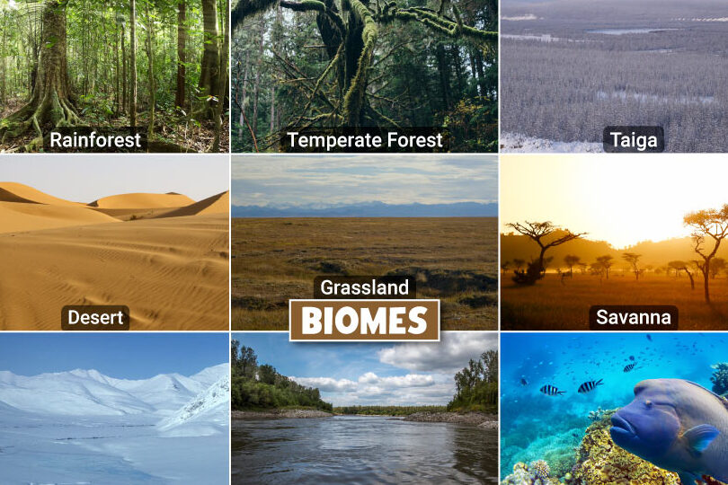

Ecosistemas

Este es el texto de mi primer artuculo
Este es el texto de mi segundo articulo
¡Hola, mundo!
Esta es mi primera pagina web.
Componentes, tipos e importancia de los ecosistemas.
Componentes de un ecosistema:
Organismos vivos (bióticos): Incluyen plantas, animales, hongos, bacterias y microorganismos.
Entorno no vivo (abiótico): Incluye factores como la temperatura, la humedad, la luz solar, el suelo, el agua y el aire.
Interacciones: Los seres vivos se relacionan entre sí y con su entorno a través de procesos como la competencia, la depredación, el parasitismo y la simbiosis.
Tipos de ecosistemas:
Terrestres: Incluyen bosques, selvas, desiertos, praderas, entre otros.
Acuáticos: Incluyen océanos, lagos, ríos y humedales.
Importancia de los ecosistemas:
Provisión de recursos:
Proporcionan alimentos, agua, madera y otros materiales necesarios para la vida humana.
Regulación de procesos naturales:
Ayudan a regular el clima, el ciclo del agua, la calidad del suelo y la polinización.
Diversidad biológica:
Son la base de la biodiversidad, que a su vez es fundamental para la salud del planeta.
Beneficios culturales y recreativos:
Ofrecen espacios para el turismo, la recreación y la investigación. .
Biomas y Ecosistemas compartidos
jungla: Jungla o también llamada Selva, es un bioma característico
de Minecraft, por ser uno de los biomas más grandes y
densos, fue añadido en la versión 1.2.0. Es un frondoso
bioma que consiste en bosques de árboles selváticos que
pueden superar 31 bloques de altura y 2 bloques de
diámetro.
Taiga: Las taigas son similares a los biomas de bosque.
Los cerdos, pollos, lobos, vacas, conejos y ovejas
suelen campar a sus anchas por estos territorios.
Además, en muy raras ocasiones puedes
encontrar algún que otro ocelote. Si quieres
madera de abeto, este es tu sitio.
Desierto: Los desiertos son una de las mejores fuentes de
arena en el juego gracias al gran volumen en el que se
encuentra aquí. Hay algunas estructuras que se
generan específicamente en los desiertos, como las
pirámides y las aldeas. puede ser un lugar muy peligroso para pasear
por la noche. Hay muchas turbas enemigas al
acecho, muy pocos animales y pocos lugares
para esconderse o refugiarse.
Oceanos: Los océanos son vastas extensiones de agua que separan
los continentes en Minecraft. Puedes encontrar diferentes
tipos de peces, delfines, tortugas y monumentos oceánicos.